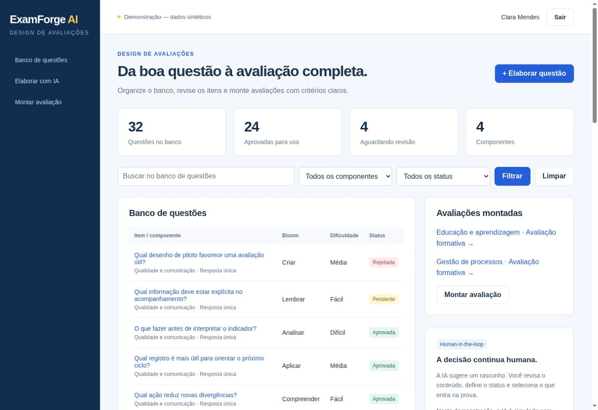
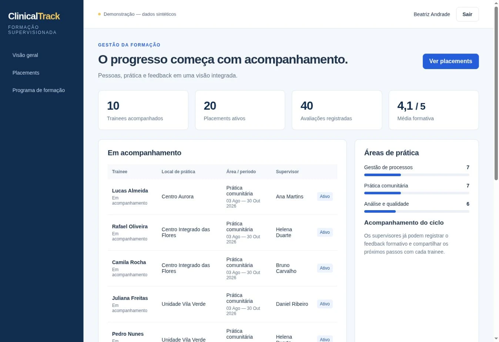
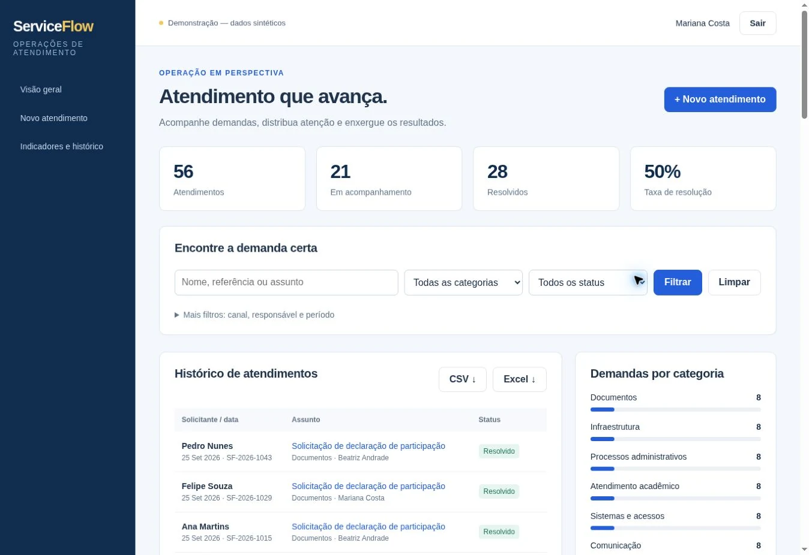
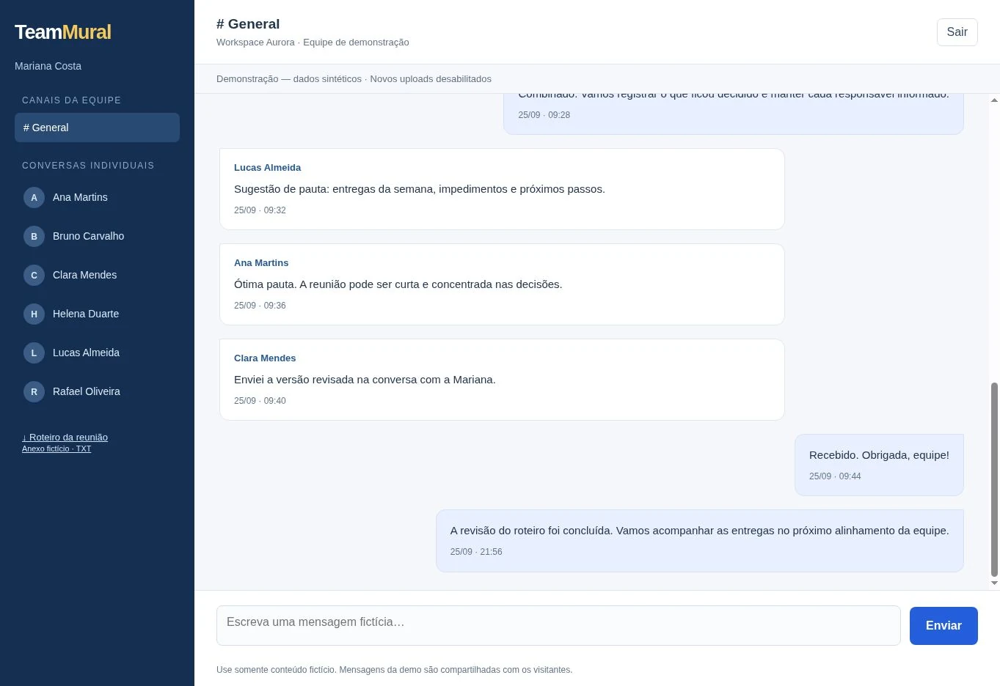

Web applications
Process digitization, internal systems and browser-based products.
Python Developer · Django · Flask · JavaScript · Applied AI · EdTech · HealthTech · Automation
I build web applications, automation workflows and AI-assisted products from real problems in work, education and health — with a focus on clarity, usability and working delivery.
Available for remote projects, freelance work and development contracts.
Clear process.
Thoughtful experience.
Built to work.
Process digitization, internal systems and browser-based products.
LLMs integrated into real workflows, with structured outputs and human review.
Assessment systems, portals, simulators, dashboards and teaching tools.
Educational and administrative workflows for healthcare settings.
APIs, documents, spreadsheets, data flows and repetitive tasks.
Fast idea validation with functional, iterative products.
Products combining backend development, databases, responsive interfaces, automation and AI integration.
Explore the online demos using synthetic data. In ExamForge AI, question generation and review are simulated, with human decision-making in the loop.
AI-assisted question bank and assessment workflow
From item authoring to test assembly, with human review, competency organization and LMS export.
Reduce fragmentation across assessment authoring, review, approval and distribution.

Supervised training, internship and placement management
Trainees, supervisors, sites, periods and assessments in one workflow, with access defined by supervision relationships.
Make training progression visible while connecting assessment, supervision and next steps.

From service operations to management insights
Scattered service records become structured requests with categories, owners, filters and indicators for management.
Turn service history into accessible information for operations and decision-making.

Internal communication for small teams
A dedicated space for team coordination, with a general channel, direct conversations and organized history.
Centralize work communication in a simple environment with conversation-based access.

Python-focused developer working across web applications, automation and AI integration. I translate complex workflows into usable digital tools, combining software development with a background in higher education, research and health education.
Independent projects using Python, Django, Flask, JavaScript, relational databases, document generation, applied AI, APIs and cloud deployment.
Academic experience in health programs, educational assessment, microbiology, immunology, genetics, molecular biology and digital solutions for medical education.
Interfaces, content, AI and automation across different domains.
Educational portal, curriculum architecture and content design.
React · TypeScript · ViteStructured document generation for academic workflows.
Django · AI · DocumentsCase simulation, decision trees and learning analytics.
Django · AI · AnalyticsPDF presentations with voice, gesture and keyboard interaction.
React · PDF.js · MediaPipeScheduling, user roles and outpatient workflow organization.
React · TypeScript · SupabaseWorkspace for researching, organizing and preparing content with AI assistance.
Flask · SQLAlchemy · AIMy background in higher education, research, extension work and health education helps me understand complex processes and turn them into useful digital products.
I work across web development, artificial intelligence and automation, connecting user problems to solutions that make sense to build.